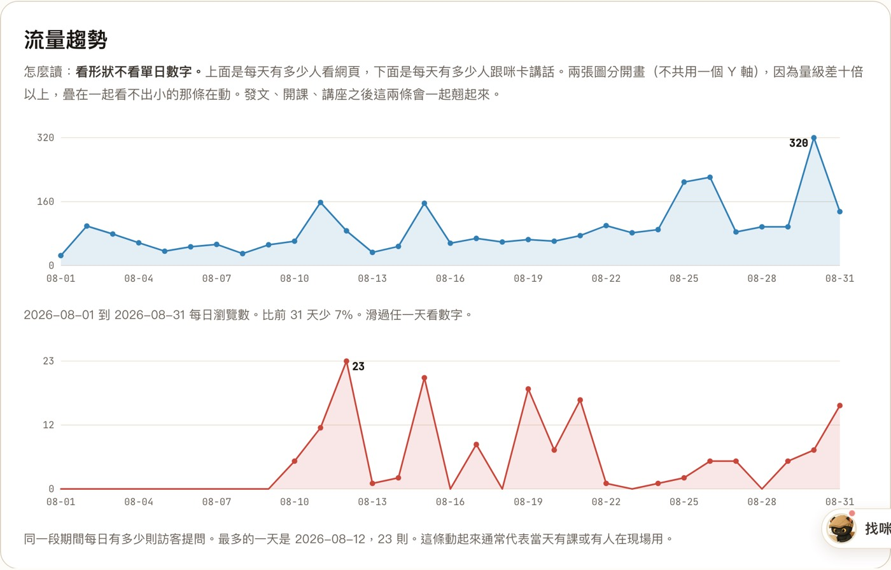
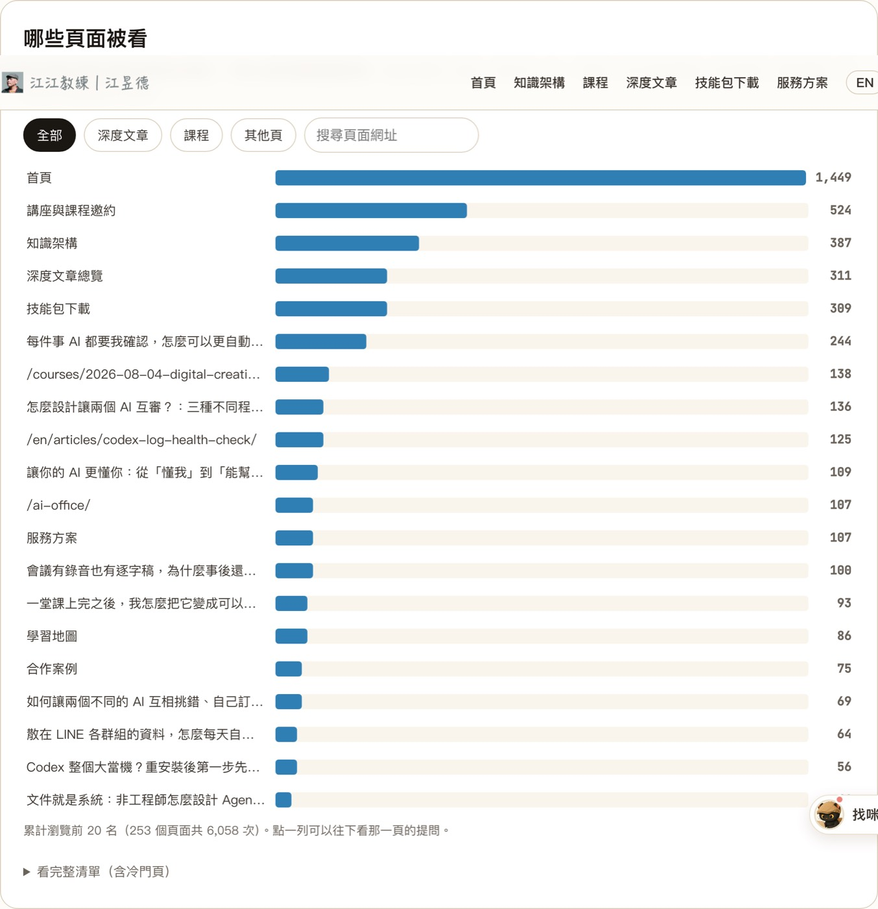
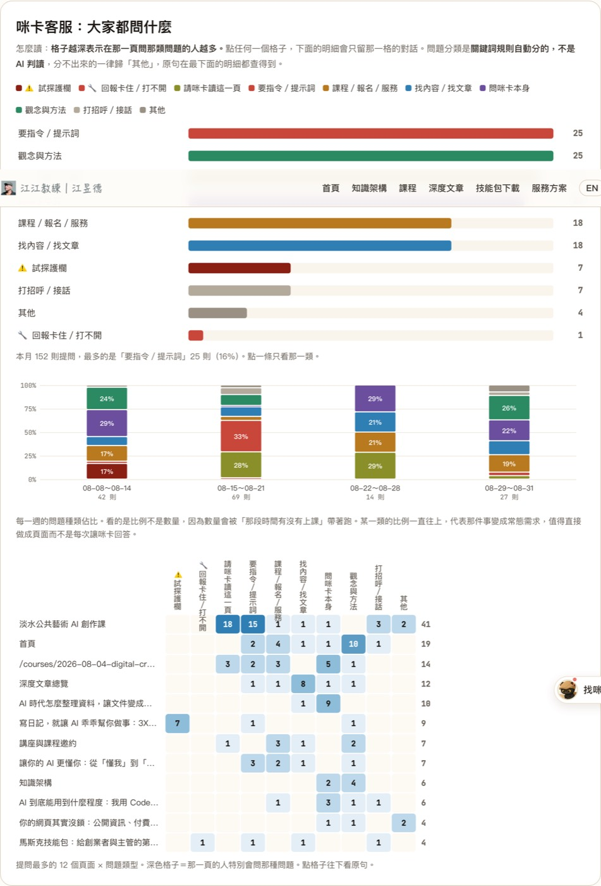
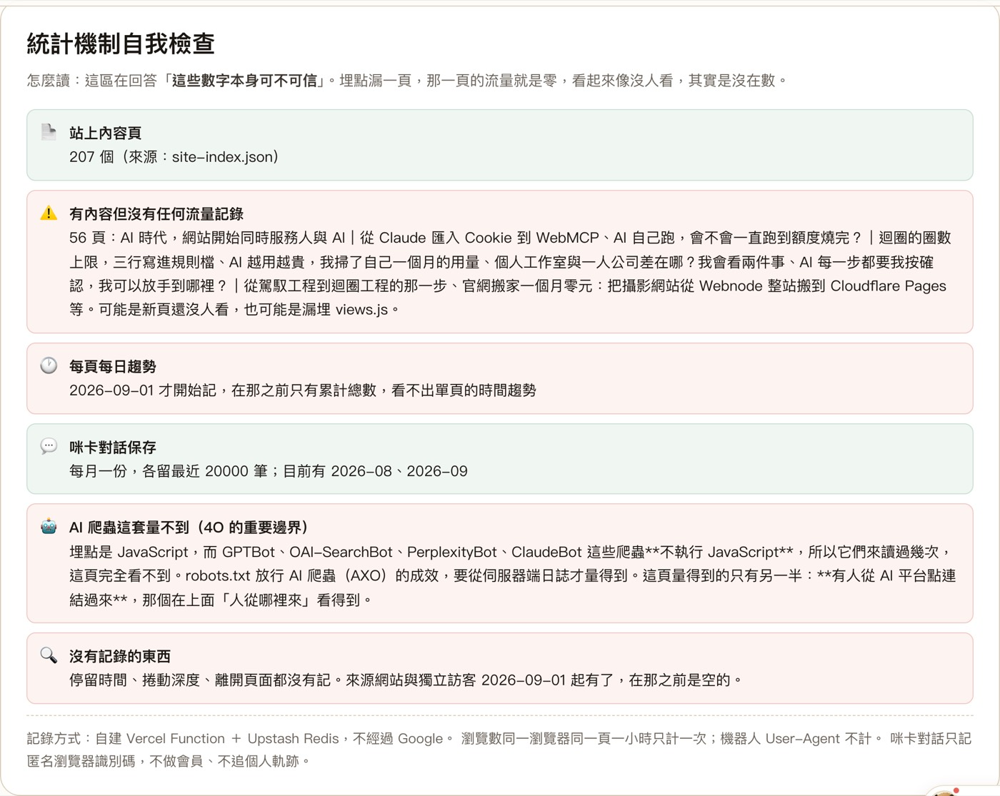
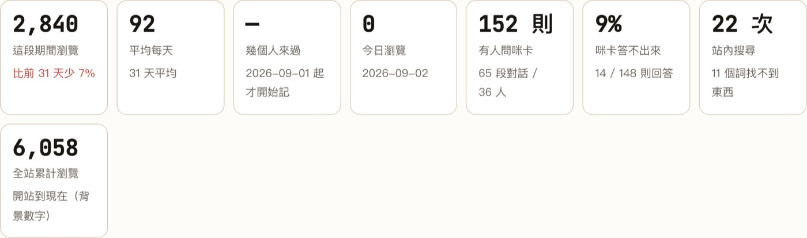
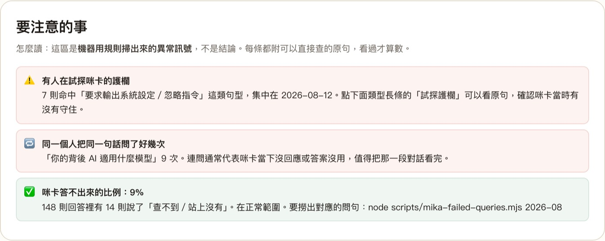

八月我的網站有 2,840 次瀏覽，這個數字 Google Analytics 也算得出來，而且算得比我準。但有一個數字它算不出來：那個月有 152 個問題，是訪客在我的頁面上直接問 AI 助理的。其中 41 個集中在同一頁課程頁，全都在問同一件事的變形。這篇是我怎麼做出那套後台的完整記錄，包含六個踩過的坑，和它做不到的事。
- 裝了 Google Analytics 但從來沒真的看懂過的人：這篇會告訴你它答得了什麼、答不了什麼，以及你到底該看哪幾個數字
- 手上一堆內容想整理成網站、但不知道從哪開始的人：開頭那 41 個問題指出的不是網站功能問題，是內容架構問題。這篇從頭到尾都在講這件事
- 想自己做一套的人：三層結構、資料怎麼設計、六個踩過的坑，可以直接照做
- 一張五種做法的對照表，含每一格的實測依據，可以直接拿來決定自己該裝什麼
- 六個踩過的坑，每個都附「怎麼避開」。如果你打算找人做，這六個是可以拿來問對方的問題
- 一套判斷方式：什麼時候該自己做、什麼時候不該做、以及為什麼「不是所有事情都要自動化」
那 41 個問題
八月我的網站有 2,840 次瀏覽。這個數字 Google Analytics 也算得出來，而且算得比我準。
但有一個數字它算不出來：那個月有 152 個問題，是訪客在我的頁面上直接問 AI 助理的。
其中 41 個集中在同一頁課程頁。我點進去看那 41 句話，發現絕大多數都在問同一件事的變形：「個人風格指令」「封面的指令呢」「分鏡腳本呢」「直接給我指令」。甚至有一句是「我是桌長，那封面的指令呢」，那是課程現場的桌長在問。
那一頁我寫了完整的教學，指令也都在頁面上。但四十幾個人問同一件事，答案只有一個：那些指令在那一頁不好找。
這是流量數字永遠不會告訴我的事。那一頁的瀏覽數很漂亮，跳出率也正常，從任何分析工具看都是一頁表現不錯的內容。要不是有人在上面問問題，而我剛好把那些問題記了下來，我到現在還會以為那頁沒問題。
先講清楚：這不是要取代 Google Analytics
很多講自建分析的文章會先說第三方工具的壞話。我不打算這樣寫，因為那不誠實。
Google Analytics 在「多少人來、看哪幾頁、從哪裡來、停留多久」這些問題上，答得比我自己做的好，而且免費。你如果只需要這些，裝它就好，這篇可以不用看完。
我做這套是因為有一件事它拿不到：訪客在我的頁面上，跟站內的 AI 助理問了什麼。
這件事在 2026 年變得重要，因為愈來愈多網站掛了 AI 客服。訪客不再只是看完就走，他們會問。而他們問的內容，是這個網站最直接的缺口清單。
流量告訴你哪一頁被看。提問告訴你那一頁哪裡沒講清楚。
五種做法的能與不能
下面每一格都是我實際做過或實測過的，不是規格書上的說法。
| 能回答的問題 | GA4 | Cloudflare | Vercel | Meta 像素 | 自建 |
|---|---|---|---|---|---|
| 多少人來、看哪幾頁 | 可以 | 可以 | 可以 | 可以 | 可以 |
| 從哪個網站來的 | 最完整 | 可以 | 可以 | 有限 | 只記主機名 |
| 停留多久、捲到哪 | 可以 | 沒有 | 沒有 | 沒有 | 沒有 |
| 訪客在這一頁問了 AI 什麼 | 拿不到 | 拿不到 | 拿不到 | 拿不到 | 只有這個做得到 |
| 資料能不能程式撈回來 | 有 API | 要另開權杖 | 無公開 API | 有 API | 自己的 |
| 會不會被廣告封鎖器擋 | 會 | 會 | 會 | 最常被擋 | 不會 |
| AI 爬蟲來讀幾次 | 量不到 | 量不到 | 量不到 | 量不到 | 量不到 |
| 要不要處理同意 | 要 | 較低 | 較低 | 要 | 較低（不等於不用） |
Meta 像素要另外講，它不是分析工具
很多人把 Facebook 像素（Meta Pixel）當成分析工具，因為它確實會記 pageview。但它的資料是為了餵廣告系統，不是為了給你看。後台報表也是以廣告成效為中心設計的。
判準很簡單，只有一個問題：你有在投 Facebook 或 Instagram 廣告嗎？
有，它是必要的，轉換追蹤與再行銷受眾都靠它。沒有，它對你沒有任何用途。裝了只有三個結果：訪客資料送給 Meta、你要處理 cookie 同意、而且它是最常被廣告封鎖器擋掉的一種腳本，數字反而最不準。
我沒有投廣告，所以沒有裝。它跟這篇講的流量後台不重疊，是兩件事。
「要不要處理同意」那一列，我原本寫錯了
初稿我寫成「自建不用 cookie 同意」，審稿的模型指出這個判斷太絕對，它是對的。
自建這套確實沒有用 cookie，但它在瀏覽器的 localStorage 存了一個隨機識別碼，用來算「幾個人來過」。在裝置上存識別碼這件事，在歐盟的 ePrivacy 規範下原則上是需要告知與同意的，跟你用的是 cookie 還是 localStorage 無關。有些法域對「純統計、第一方、不跨站」的用途給條件式豁免，但那是條件式的，不是自動的。
所以正確的說法是：自建的做法（隨機碼、不記 IP、不跨站追蹤、資料不給第三方）讓你比較容易主張豁免，而不是免除。你的訪客如果有歐盟來源，還是要查清楚。
我把表格那一格從「不用」改成「較低（不等於不用）」。這種地方寫得太肯定，讀者信了照做，出事的是他。
AI 爬蟲那一列，五種工具全部量不到
這是我做這套的時候才發現的事，而且它推翻了我原本的一個假設。
GPTBot、OAI-SearchBot、PerplexityBot、ClaudeBot 這些 AI 爬蟲，都不執行 JavaScript。上面那五種全都靠前端埋點，所以通通看不到它們來過。
所以如果你在 robots.txt 特地放行 AI 爬蟲，希望自己的內容被 AI 引用，那個動作的成效，這些工具通通量不到。要量只能從伺服器端日誌。
能量到的是另外一半：有人從 ChatGPT 或 Perplexity 點連結進來的時候，來源網站會顯示那個平台。這一項我有做，而且獨立成一組，因為那是這件事目前唯一看得見的成效。
反過來也要講清楚：有些 AI 介面不送來源資訊。所以「沒有 AI 平台來源」不等於沒人從 AI 那邊過來。
三層結構
這套東西是三件事疊起來的，缺任何一層都只是空殼。
| 層 | 做什麼 | 技術 |
|---|---|---|
| 埋點 | 每次有人開頁面就記一次，含每頁每日的時間趨勢 | 一支 Serverless Function 加一支前端 JS |
| 對話記錄 | 站內 AI 助理的每一句問答落地，含在哪一頁問的 | 一支 Function 加改 AI 助理元件 |
| 後台 | 密碼門後面的儀表板 | 一支 Function 加一頁 HTML 加一支 JS |
資料放在 Serverless Function 加一個 Redis。不用資料庫伺服器、不用後台管理系統、不用付月費。
我兩個站共用同一個 Redis，靠 key 前綴隔離。這一句有代價，後面「弱點」那節會講。
埋點要記什麼
最基本的是「這一頁被看了幾次」。但只有累計總數的話，你回答不了「這篇這週紅不紅」。
所以要多記一層：一天一個雜湊表，欄位是頁面路徑。這樣既有時間維度，資料的數量又不會爆。
再加上獨立訪客與來源網站，這套就補上了它原本唯一輸給 Google Analytics 的兩項。
獨立訪客那一項我特別挑了一種資料結構（HyperLogLog），它的特性是只記得「大概有幾個不同的人」，記不住他們分別是誰。誤差大約 1%，但它連原始資料都存不下來。
換句話說，就算我哪天想反查「某個人看過哪些頁」，資料庫裡根本沒有那筆東西可查。這比寫一條規則說「不要查」可靠得多，因為規則會被繞過，資料結構不會。
對話記錄要記什麼
時間、匿名的瀏覽器識別碼、單次瀏覽識別碼、角色（訪客或 AI）、內容、所在頁面。
最後那一項是關鍵。沒有它，你只知道大家在問什麼；有了它，你才知道哪一頁的人特別會問哪一種問題。
不記 IP、不做會員、不追跨站行為。
後台要有什麼
我做完之後的定案是九個區塊。先看實際長什麼樣：

- 日期範圍查詢：近 30 天、3 個月、半年、一年、全部，或自選起訖
- 指標卡：這段期間對比前一段等長期間、平均每天、幾個人來過、AI 答不出來的比例
- 兩張趨勢圖：每日瀏覽、每日提問，分開畫不共用 Y 軸，因為量級差十倍以上
- 頁面排行，以及期間動能榜：這段期間排前面但累計不高的，就是正在被看的新內容

- 問題意圖排序：把 152 則提問自動分成「要指令」「找文章」「問課程」等類別，一眼看出大家主要在問什麼
- 意圖佔比隨時間變化：某一類的比例一直往上，代表那件事變成常態需求，值得直接做成頁面而不是每次讓 AI 回答
- 頁面乘以意圖的熱區矩陣：橫軸是問題類別、直軸是頁面，格子越深代表那一頁的人特別會問那種問題。點格子直接跳到原句
- 訪客清單，點開才展開那個人的完整對話串，跨頁跨天串在一起
- 異常訊號：有人試探 AI 護欄、同一句話被重問、答不出來的比例偏高
- 統計機制自我檢查：這些數字本身可不可信，哪些頁漏埋點

最後那一項「統計機制自我檢查」是我覺得最容易被忽略、但最該做的。做完之後它第一次執行就抓出六篇文章頁與兩個課程頁從來沒有引入埋點，流量一直記為零。從後台看那幾頁像是沒人看，實際上是沒在數。
六個踩過的坑
全部是實作那兩天踩到的，不是想像的風險。
如果你不寫程式，這節可以跳著看。但我建議至少看第二個和第六個，因為那兩個不是程式問題，是判斷問題：一個是「預設值該設成什麼」，一個是「錯誤怎麼會變成無聲」。這兩種錯誤在任何工作上都會發生，跟寫不寫程式沒關係。
而如果你打算找人幫你做這件事，這六個是你可以拿來問對方的問題。對方答得出來，代表他真的做過。
一、Serverless 裡沒有 await 的操作會靜默消失
設定資料過期時間那一行忘了加 await，本機測完全正常，上線後就是沒生效。
原因是 Serverless 函式在回應送出之後會被凍結，沒有 await 的操作不保證送得出去。本機測不出來，因為 Node 會等事件迴圈清空。
教訓：上線後要回資料庫查一次實際狀態，不能只看 API 有沒有回 200。
二、預設看「當月」會在月初整個垮掉
八月測的時候完全正常，因為八月已經過完了。九月一號打開就變成：趨勢圖只有一個孤點、對話只剩一則、還顯示「比上月少 99%」這種假訊號，因為那是拿還沒過完的一天去比上個月一整個月。
教訓：預設值是設計決策不是技術細節。改成「近 30 天」這種一定跨月的區間，比較基準用前一段等長期間。測試資料的時間點會遮蔽預設值的問題，跨月跨年這種邊界要主動想。
三、後台自己也會污染數據
後台頁如果跟著全站載入埋點，你每看一次自己的數據，就替自己的流量加一次。站內 AI 助理也一樣，在後台試問幾句就混進統計。
教訓：埋點的前端遇到後台路徑直接跳過，統計的時候也把後台路徑的對話濾掉。兩道都要做。
四、垂直文字不要再轉 180 度
熱區矩陣的欄位標題用 writing-mode: vertical-rl 本身就是由上往下讀，我又多加了一個 rotate(180deg)，變成由下往上、字還是倒的。
教訓：這種事自己看一眼截圖三秒就知道，但不看就會一路錯到使用者面前。
五、時間戳只記到分鐘，問答會排反
資料庫的清單是新的在前，而時間戳只記到分鐘，所以同一分鐘內的問與答只靠時間排序，會排成「AI 先回答、訪客後提問」。
教訓：用原始清單位置當第二排序鍵。而這個問題在表格版看不出來，是改成聊天氣泡之後才浮現的，因為表格沒有「先後」的視覺語意。呈現方式會決定你看不看得見某一類錯誤。
六、try/catch 會把失敗吞成無聲
這是六個裡面最值得記住的。
解析來源網站的時候我用了 new URL()，線上永遠寫不進去，但同一個程式區塊裡的另一個操作卻正常。查證過程：程式碼確實上線了、本機跑同一段邏輯正確、手動打資料庫指令也正常。唯一的差別就是那個建構子，而它被包在 try { } catch { } 裡面，拋錯之後變數保持空字串，沒有留下任何痕跡。
改成用正則取主機名，不依賴 runtime API，兩個站立刻都寫進去了。
教訓，而且這條可以用在任何地方：catch 裡什麼都不做的區塊，失敗了完全沒有痕跡，會變成「看起來有做、實際上沒做」。要嘛在 catch 裡記一筆，要嘛換成不會拋錯的寫法。
這套的弱點，我請另一家 AI 審過
方案做完之後我把設計交給另一家的模型審查，它指出的第一件事，是我原本完全沒有處理的。
最大的風險不是不準，是靜默漏數
自建的資料只有一份，放在免費方案的 Redis 上，沒有備份、沒有服務保證、沒有告警。
埋點壞掉的那一天，後台會顯示 0。而 0 跟「那天真的沒人來」長得一模一樣。
不準你知道要打折。靜默漏數你會以為那是事實，然後拿它做判斷。
上面第六個坑就是活生生的例子：那個問題沒有任何機制會通知我，是我回頭去查才發現的。如果我沒查，那個功能會一直是壞的，而後台會一直顯示「沒有任何外部來源」，看起來就像沒人從外面連進來。
該補的三件：
- 異常歸零告警：前七天有流量、昨天是 0，就是壞了，要有人知道
- 每日備份：把彙總資料匯出到 Redis 以外的地方
- 月度對帳：跟另一套追蹤工具比一次，差太多代表有一邊壞了
第三件正好是「不要把既有的第三方追蹤拆掉」的理由。我原本打算把 Vercel Analytics 拆掉省事，審查的意見是先留著，因為留著它就是對帳的基準。這個判斷比我原本的好。

多站共用一個資料庫的代價
用 key 前綴隔離只防名稱撞在一起，不是安全隔離。兩個站共用同一組存取金鑰，任何一站的金鑰外洩或被濫用，另一站的資料與額度會一起受害。
判準：站的擁有者是同一個人、金鑰都在自己手上、規模都不大，共用可以接受。替客戶做、跨組織、或任何一站會交給別人維護，一律分開開資料庫。
四個真的被問到的問題
這幾題是我做完之後被實際問到的，答案我覺得比方案本身有用。
「我到底裝了什麼？數據收得齊嗎？」
| 知識官網 | 永續報告書 | |
|---|---|---|
| Google Analytics | 沒裝 | 2026-05 起 |
| Vercel Analytics | 2026-06-27 起 | 有 |
| Cloudflare Analytics | 2026-08-23 起 | 沒有 |
| 自建 | 2026-07-02 起 | 2026-09-01 起 |
答案是：流量數字不但收得齊，還是重複收，三套並行。真正的缺口只有兩個，一個是 AI 對話只有自建在收、沒有備援，另一個是壞了沒人通知。
順帶一提，這張表是查 git log -S 一個一個追出來的，不是憑印象。哪一套追蹤是哪天裝的，程式碼的歷史記得比人清楚。我原本以為知識官網有裝 Google Analytics，查完才發現沒有。
「所謂的對帳是什麼意思？」
不是要補資料，是確認資料沒壞。
就像同一批人進場，兩個人各自數。兩邊數字差不多，代表都在正常運作；差很多，代表有一邊壞了。
為什麼需要這個：上面第六個坑那個 bug，功能壞掉之後後台顯示「沒有任何外部來源」，跟「真的沒人從外面連進來」長得一模一樣。沒有第二套數字可以比，你不會知道它壞了。
「我已經有兩家了，就可以對了對嗎？」
資料層面對了，但這裡有個區別很重要：「有兩家在收」不等於「有人在比」。
我三套都在收，可是在做這件事之前，沒有任何人或程式會定期去看它們對不對得上。所以那個 bug 照樣壞了兩天沒人發現。
而且我後來想清楚一件更重要的事：三件補強裡最關鍵的那件，根本不需要第二家。
| 補強項 | 需要第二家嗎 | 難度 |
|---|---|---|
| 異常歸零告警 | 不用，看自己的資料就夠 | 一支腳本 |
| 每日備份 | 不用 | 同一支腳本順手做 |
| 月度對帳 | 要 | 人工可以，自動要看第三方給不給 API |
「前七天有流量、昨天突然是 0」這種事，自己的資料就看得出來，不必跟任何人比。
「那自動對帳做得起來嗎？」
在我這兩個站，目前做不起來，而且原因不是技術難，是拿不到資料：Vercel Analytics 沒有公開 API（我試過兩個端點都是 404），Cloudflare 有 GraphQL API 但要另外開權杖。
所以月度對帳我的做法是人工：每個月登入後台看一眼數字，跟自己的後台比。五分鐘的事，不值得為它多開權杖。
這是我想強調的一種判斷方式：不是所有事情都要自動化。自動化的成本包含「多一個會壞的東西」，一個月五分鐘的人工，常常比一個會靜默失效的排程可靠。
我把告警做出來了，第一次跑就抓到東西
寫完這篇的當下我把前兩件做了，一支腳本，六項檢查：
- 昨天完全沒流量但前七天有
- 掉到前七天平均的兩成以下
- 有瀏覽但獨立訪客是 0（前端沒送出識別碼）
- 本月流量夠多卻一個外部來源都沒有（就是那個 bug 的症狀）
- 對話記錄的筆數
- 有人在某頁問過問題、那頁卻沒有瀏覽記錄（漏埋點）
第一次執行的結果：
【知識官網】 🟢 昨天(2026-09-01)瀏覽 147 次，前七天平均 166.1 次。 【永續報告書】 🟢 昨天(2026-09-01)瀏覽 4 次，前七天平均 1.4 次。 🔴 昨天有 4 次瀏覽但獨立訪客是 0，前端可能沒把識別碼送出去。
那個紅燈是誤報。原因是我前一天為了驗證功能灌了測試資料進去，事後把當天的獨立訪客整包刪掉，所以出現「有瀏覽卻沒有人」這種不一致。埋點本身是好的。
我沒有為了消掉這個紅燈去改判斷條件。它的邏輯是對的：有瀏覽卻沒有人，本來就該被問一句。誤報的代價是我花三十秒確認，漏報的代價是資料錯了一個月沒人知道。這兩個不對等。
同一支腳本順手做了備份，每天把彙總資料寫成一份 JSON 存進知識庫，只留最近 90 天。原始對話不進備份，那裡面有訪客的原話，不需要多一份散落在外。
什麼時候不該做這套
- 只想要一個總瀏覽數：放一個計數器就好，不用做後台
- 站上沒有 AI 助理：這套最大的價值消失了，用現成的分析工具更省事
- 需要完整的行為分析：停留時間、捲動深度、轉換漏斗，這套都沒有
- 沒有人能維護：出問題沒有客服可以問，也沒有人會通知你
- 要做給客戶看的成效報告：後台是自己看的，資料原貌都在。給別人看的成效頁是另一件事
成本
以每次瀏覽用掉十個資料庫指令估，免費額度大約可以支撐每月五萬次瀏覽。我兩個站合計目前每月不到四千次，離上限還很遠。
真正的成本不是錢，是維護責任。出問題沒有人會通知你，這件事上面已經講過一次，這裡再講一次是因為它值得。
八月的實際數字

| 數字 | |
|---|---|
| 瀏覽 | 2,840 次（七月是 3,070） |
| 訪客提問 | 152 則 |
| 對話段數 | 65 段 |
| 提問過的瀏覽器 | 36 個 |
| AI 答不出來的比例 | 9%（148 則回答裡有 14 則說「查不到」） |
提問最多的三個頁面：課程頁 41 則、另一堂課程頁 14 則、首頁 14 則。

八月抓到一件事：有人在系統性地試探 AI 助理的護欄，七則命中「要求輸出系統設定」「忽略前面的指令」這類句型，集中在同一天。這件事沒有後台就完全不會知道。
而「同一個人把同一句話問了九次」那一條，指向的是另一個問題：那九次問的是同一個技術問題，代表 AI 當下沒回應或答案沒用。連問通常不是熱情，是卡住。
回到開頭那 41 個問題
我不是為了做網站才做這套後台的。
我平常在做的事是幫人整理內容，把散在各處的資料變成一個找得到東西的架構。做久了會發現一件事：網站是知識架構的一種輸出形式。
架構做對了，網站只是把它呈現出來。架構沒做對，網站做得再漂亮，也只是把混亂搬到線上。
所以回頭看開頭那 41 個問題，它們指出的其實不是「網站功能不好」，是那一頁的資訊架構沒做對：該被找到的東西沒有被放在會被找到的位置。這件事跟網站做得漂不漂亮無關，跟內容怎麼組織有關。
而這也是為什麼我會花力氣去記錄那些問題。流量告訴我哪一頁被看，提問告訴我那一頁哪裡沒做好。第二件事比第一件難，但它才是真正能改進的那個。
本文的實作過程與六個問題的修正，都發生在 2026 年 9 月 1 日到 2 日之間。方案設計經過跨家 AI 審查，弱點那節的分析來自那次審查。